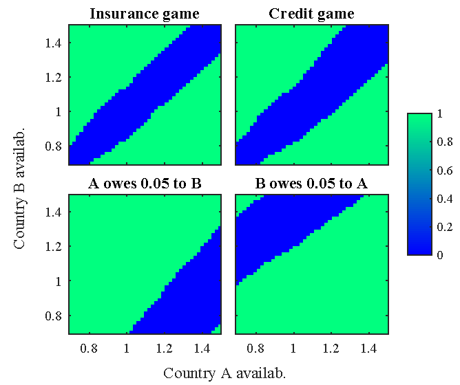
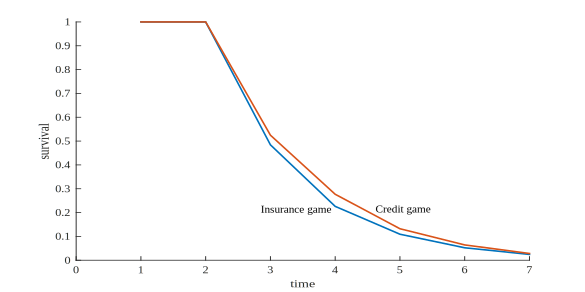
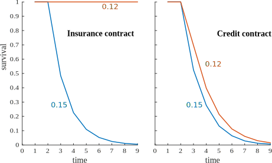
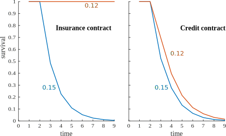

Sustainability of Regional Food Reserves When Default Is Possible
By Randall S. Romero-Aguilar and Mario J. Miranda
AAEA Meetings, San Francisco, July 27, 2015
The case for joint reserves
| The promises | The challenges |
|
|
The Model
- Two countries
- No trade
- One grain
- Countries share a fraction of their grain
- Objective: maximize lifetime utility of representative agent
- Dynamic game with limited commitment
- Nash-Markov sub-game perfect equilibria
A country in autarky
Availability
\(\newcommand{\DEF}[2]{\underset{\scriptsize\color{grey}{\text{#1}}}{#2}}\) \[\DEF{production}{\tilde{q}_i} + (1-\phi)\DEF{past storage}{s_{i,-1}} \equiv \DEF{availability}{a_i} = \DEF{consumption}{c_i} + \DEF{storage}{s_i} \]Bellman equation
\[ V\left(a\right) = \max_{s\in [0,a]} \left\{u(a-s) + \delta E V\left(a'\right)\right\} \]subject to
\[a' = (1-\phi)s + \tilde{q}'\]A joint reserve
Redistributing availabilities: country $B$ transfers $l = \psi(a_B - a_A)$ units of grain to country $A$
| Insurance contract | Credit contract |
|
\[\hat{a}_A = (1-\psi)a_A + \psi a_B\]
\[\hat{a}_B = \psi a_A + (1-\psi)a_B\] |
\[\hat{a}_A = (1-\psi)a_A + \psi a_B - l_{-1}\]
\[\hat{a}_B = \psi a_A + (1-\psi)a_B + l_{-1}\] |
If any country defaults, they remain in autarky forever
| Default |
|
\[\hat{a}_A = a_A\]
\[\hat{a}_B = a_B\] |
A game of default
| Insurance / Credit game | Country B | ||
|---|---|---|---|
| Cooperate | Default | ||
| Country A | Cooperate | $W^A(a_A,a_B\color{red}{, l}),W^B(a_A,a_B\color{red}{, l}) $ | $V^A(a_A), V^B(a_B) - \DEF{stigma}{\sigma}$ |
| Default | $V^A(a_A) - \sigma, V^B(a_B)$ | $V^A(a_A) - \sigma, V^B(a_B) - \sigma$ | |
where
\[\DEF{value of cooperating}{W(a_A,a_B\color{red}{, l})} = \max_{s\in [0,\hat{a}]} \left\{u(\hat{a}-s) + \delta E \DEF{game payoff}{U\left(a'_A,a'_B\color{red}{, l}\right)}\right\}\]Solving the game
Numerical solution builds on CompEcon's gamesolve:
- to allow discrete states
- to allow discrete actions
Approximation algorithm
- Discretize the production shocks
- Compute the value of autarky $V$
- Guess $W^A$ and $W^B$, using Chebyshev polynomials
- Get the payoffs $U^A$ and $U^B$ by solving the discrete game
- Update $W^A$ and $W^B$
- Iterate steps 3 and 4 until convergence
Baseline parameters
| Parameter | Description | Player 1 | Player 2 |
|---|---|---|---|
| $\rho$ | relative risk aversion | 2.00 | 2.00 |
| φ | marginal cost of storage | 0.05 | 0.05 |
| δ | government discount factor | 0.95 | 0.95 |
| σ | stigma | 0.05 | 0.05 |
| α | beta distribution parameter | 1.25 | 1.25 |
| $\lambda$ | max. production shock | 0.30 | 0.30 |
| ψ | shared availability | 0.15 | |
| $\varrho$ | production correlation | 0.00 | |
Main results
Because bigger liabilities drive countries to default, reserve is more sustainable when
- production shocks are positively correlated
- the shared fraction of availabilities is smaller
- the reserve is operated as an insurance union rather than a credit union
Default regions
- Default occurs when the required transfer exceeds a critical value $l^*$
- In insurance contract, only the country with higher availability has incentive to default.
- In credit contract, a debtor also has incentive to default if own availabily is low.
Time to default
The reserve would last only a few years, regardless of contract.
Production correlation and time to default
The reserve would be more stable for negatively-correlated production shocks.

Default when sharing less grain
When sharing less grain, insurance contract is very stable.
 
